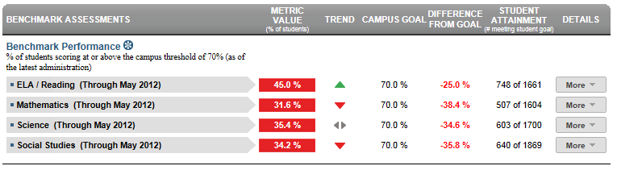

Dashboard Metrics


Benchmark Performance
Background
District Dashboard Metrics
Benchmark assessments are assessments administered periodically throughout the school year, at specified times during a curriculum sequence, to evaluate students’ knowledge and skills relative to an explicit set of longer-term learning goals. The design and choice of benchmark assessments is driven by the purpose, intended users, and uses of the instruments. Benchmark assessment can inform policy, instructional planning, and decision-making at the classroom, school and/or district levels.
Primary Metric
- Benchmark Performance: the percentage of students meeting a given threshold on a benchmark assessment.
Related Metrics
- Falling Course Grade: percent of students with a core course grade, as of the most recent grading period, that dropped 10% or more from the grading period prior to the most recent.
- Course Grades Below C Level: percent of students with one, two and 3 or more course grades below C as of the most recent grading period.
- Repeat Courses: percent of students repeating a course due to course failure.
- State Assessment Performance: percent of students passing state assessment in all tested subjects: reading/ELA, writing, math, science and social studies at the applicable grade levels and for all tests. Aggregated performance on alternative tests, including those for special education and Limited English Proficient students, is also reported.
User Interface
Dashboard Example
Figure 1 shows the Benchmark Assessment metric as seen on the district dashboard.

Figure 1 Ed-Fi Benchmark Assessment Mastery Metric
Status Definition
The Status Indicator is determined by district goals. The Ed-Fi dashboards default threshold for each core subject is 70%.
Metric Indicator | ||
Metric Name | Sub-metric Name | Metric Status Indicator |
Benchmark Assessment Mastery | ELA/Reading | Red (Below) = if rolled up total grade level student assessment score percentage is less than district goal Green (Above) = if student assessment score percentage is greater than or equal to district goal |
Writing | Red (Below) = if student assessment score percentage is less than district goal Green (Above) = if student assessment score percentage is greater than or equal to district goal | |
Mathematics | Red (Below) = if student assessment score percentage is less than district goal Green (Above) = if student assessment score percentage is greater than or equal to district goal | |
Science | Red (Below) = if student assessment score percentage is less than district goal Green (Above) = if student assessment score percentage is greater than or equal to district goal | |
Social Studies | Red (Below) = if student assessment score percentage is less than district goal Green (Above) = if student assessment score percentage is greater than or equal to district goal | |
Trend Definition
Table 3 lists the trend indicators for the Benchmark Assessment Mastery metric.
The trend does not display if the student has not taken a previous benchmark assessment.
Trend Indicators: Objective is to indicate Benchmark Assessment Mastery | |||
| Up green | If the value for the current period is more than 5 percentage points higher than the prior period | |
| Unchanged | If the value for the current period is less than or equal to 5 percentage points higher or less than or equal to 5 percentage points lower | |
| Down red | If the value for the current period is more than 5 percentage points lower than the prior period | |
Periodicity
Recommended Load Characteristics | |
Calendar | Throughout the school year |
Frequency of data load | Beginning and end of year |
Latency | 4 weeks |
Interchange schema | Interchange-StudentAssessment.xsd |
Tooltip
The standard tooltips for the metric definition, column headers, and help functions display for this metric.
The following tooltips are specific to the Benchmark metric:
- '+More' indicates drill down to view ‘Benchmark Assessment Detail’
 is ‘No change from the prior period'
is ‘No change from the prior period' is ‘Getting worse from the prior period’
is ‘Getting worse from the prior period’ is 'Getting better from the prior period'
is 'Getting better from the prior period'
Data Anomalies
Anomalies
- Previous year and current year state assessment versions must be handled for learning standard objective mappings
- Late enrollees may have taken Benchmark Assessment tests at their previous school
- Loading of data from multiple administration dates
Footnotes
An icon appears next to any metric where students have been excluded. When the user hovers over the icon, count of students who have been excluded appear in a tooltip with the reason(s) for exclusion. By clicking on the icon, the data administrator will link to the data administrator’s page for more detail.
Best practice is to exclude and footnote students based on the following criteria:
- Missing data
Date of Refresh
Best practice is for the date of last data refresh to appear next the metric in the following format:
- (Through April 2010) –container level
(05/10) – granular level
Implementation Considerations
Student Identity
Maintaining a correct and consistent student identity is at the center of any education data system. Most systems use some sort of unique identifier. However, sometimes this identifier is entered incorrectly or sometimes different systems use different identifiers.
The UDM XML supports the interchange of multiple types of identifiers. The StudentReference is a complex type within the UDM to maintain the referential integrity of the student (that is, ensuring that the data associated with each student is accurately associated with the right student). The complex type of the student reference assists with implementing the accurate matching algorithm to identify a student by utilizing any of the individual attributes (e.g., Student Unique State ID, Student ID, Campus Local ID (with Campus ID), Name and Birth Date). For example, if the Student Unique State ID is unknown, you can find the student’s identity by their Student ID, First Name, Last Name and Birth Date.
Reporting Different Versions Benchmark Assessments
Best practice is for developers to report the different test versions for students separate metrics. A student may, in any single grade level, take different versions of a benchmark test for different subjects and these should be distinguished so an educator can track progress of students.
Reporting Retakes of the Same Benchmark Assessment Test
Currently the metric reports the most recent result for a given benchmark assessment test by type, grade level, and subject. Alternatively, developers may show results for each time a test is taken within a school year to track the success of students retaking tests.
Drill Downs
Drill Down Views
The dashboards include the option to see more detail that is associated with a specific metric. Table 8 lists the drill down views that are recommended for this metric.
| Campus List | List of all campuses and whether or not they are meeting thier campus goal |